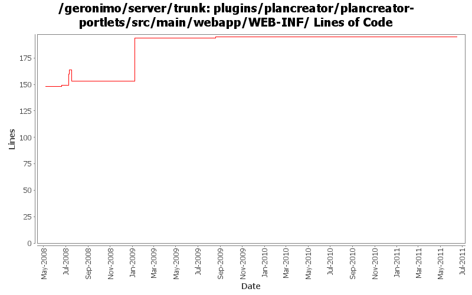

[root]/plugins/plancreator/plancreator-portlets/src/main/webapp/WEB-INF
 view
(0 files, 0 lines)
view
(0 files, 0 lines)
 configcreator
(9 files, 1876 lines)
configcreator
(9 files, 1876 lines)

| Author | Changes | Lines of Code | Lines per Change |
|---|---|---|---|
| Totals | 13 (100.0%) | 78 (100.0%) | 6.0 |
| dwoods | 4 (30.8%) | 41 (52.6%) | 10.2 |
| shivahr | 6 (46.2%) | 34 (43.6%) | 5.6 |
| xuhaihong | 1 (7.7%) | 1 (1.3%) | 1.0 |
| genspring | 1 (7.7%) | 1 (1.3%) | 1.0 |
| gawor | 1 (7.7%) | 1 (1.3%) | 1.0 |
GERONIMO-6007 Upgrade woodstox version to 4.1.1
1 lines of code changed in 1 file:
Reenable plan creator admin console portlet, patch from Shenghao Fang
1 lines of code changed in 1 file:
Initial Japanese translation. Patch from Kan Ogawa (GERONIMO-4678)
1 lines of code changed in 1 file:
GERONIMO-4484 Extraction, localization and display of messages generated in portlets. Applied common-message-openejb.patch, common-message-activemq.patch, common-message-debugviews.patch, common-message-plancreator.patch and common-message-sysdb.patch from Gang Yin. Also updated 2 console-testsuite DB tests to match modified message strings.
41 lines of code changed in 2 files:
GERONIMO-4474 Pull out the text in the JSP files to resource bundle files. Patches provided by Gang Yin.
0 lines of code changed in 2 files:
Reverting changes made in "Revision: 675220 GERONIMO-4189 Enable Geronimo Eclipse Plug-in (GEP) to get dynamic information from server". Geronimo Eclipse Plug-in should instead use JMX (please see GERONIMODEVTOOLS-434).
0 lines of code changed in 1 file:
GERONIMO-4146 Handle Security in EAR PlanCreator. Thanks to Shrey Banga for the patch.
22 lines of code changed in 1 file:
GERONIMO-4189 Enable Geronimo Eclipse Plug-in (GEP) to get dynamic information from server
11 lines of code changed in 1 file:
GERONIMO-4133 Handle dependencies in EAR PlanCreator. Thanks to Shrey Banga for the patch.
1 lines of code changed in 1 file:
GERONIMO-3433 - Plan Creator for geronimo-application.xml - first of many patches.
0 lines of code changed in 2 files: